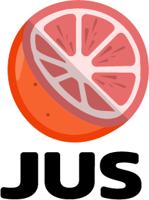

A stablecoin savings app I designed for the African unbanked. It never launched. I am sharing the actual product and business thinking, not just the brand, because it is the same problem Perena is now solving, and it is why the emerging-market savings mission is not abstract to me.
Fatou is a single mother and street vendor in Senegal. No bank account, no way to save that keeps up with a currency losing value. JUS was designed around her: deposit through the mobile money she already uses, hold a dollar stablecoin that earns yield, withdraw any time. I modelled her case in detail.
Modelled from a simulation, JUS never launched, so these are designed projections, not results. The real point: holding a dollar stablecoin (instead of the devaluing CFA franc) plus on-chain yield beats both a 4% local savings rate and doing nothing, and it builds her an on-chain financial history she can borrow against.
JUS targeted women aged 18 to 45 with mobile-money accounts across the WAEMU region, a market of roughly 32 million people who already move money on their phones but have no way to save in a stable, appreciating asset.
The user experience was two clicks. Underneath, money moved through real rails and the unit economics were deliberately simple:
Revenue came from a 15% commission on yield earned (plus small partner fees on conversion). On a modelled 100,000 users in year one at roughly $1,000 average balance and ~6% yield, that is about $700k in year-one revenue, scaling with the user base. A real business model, not a grant-funded experiment.
The hardest part of this market is not the product, it is trust and distribution with people new to crypto. The plan met them where they already were:
I took JUS to pitch-ready: demo wireframes, deck, business plan, financial model and full go-to-market. I pitched investors and partners.
It never found traction and it never launched. No live product, no users. I am presenting it as real, considered work on a problem I care about, not a success.
The hard part was never the product or the yield. It was trust and distribution with non-crypto users. Getting a person with no banking history to put real money into something they did not yet understand is the whole game.
That is exactly the problem Perena is now better placed to solve, with a real product, diversified yield, a brand built for approachability, and the fiat and wallet rails finally maturing. It is also why, when Anna talks about savers in emerging markets who have no local alternative, it is not a thesis to me. I designed the whole business around that user.
Shared as context, not a credential. The company did not make it. The thinking, and the lessons, did.